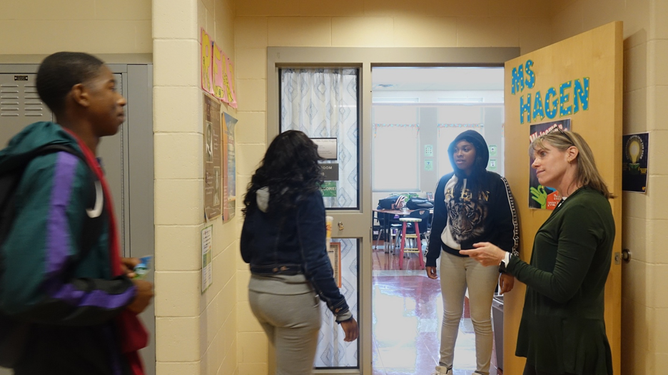
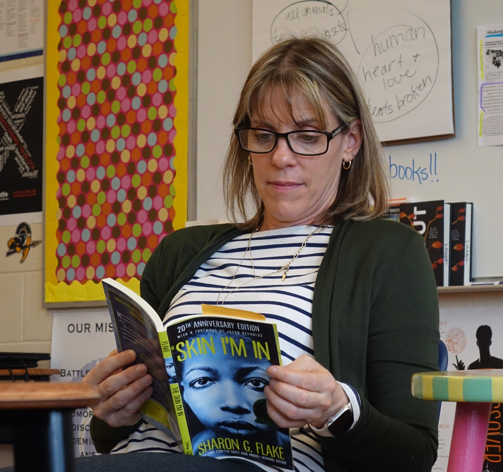
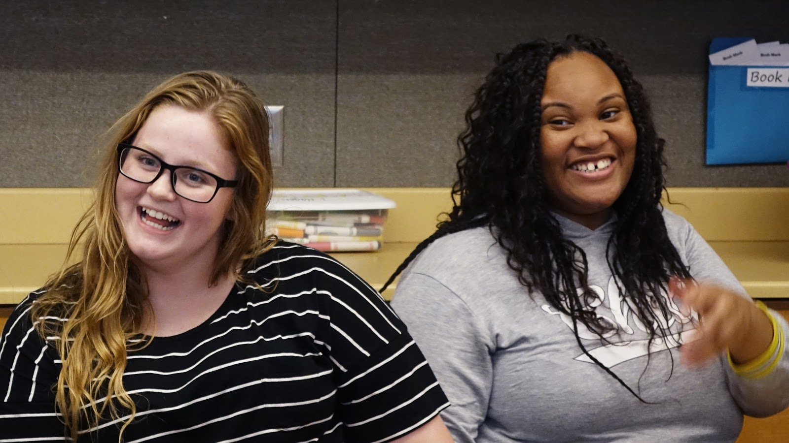
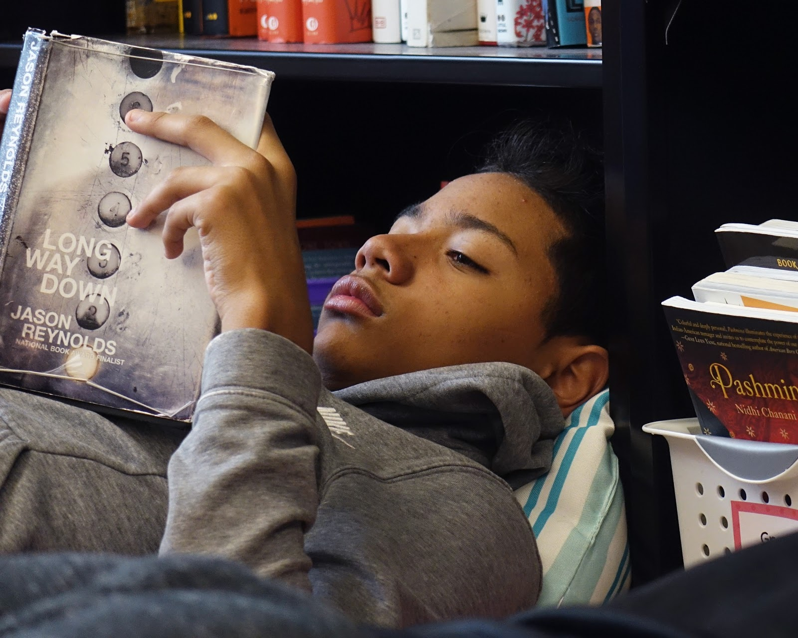
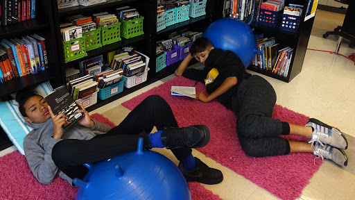

CPS teacher turns the page on educational inequity
Teachers across Columbia Public Schools are taking bigger steps to better support students most affected by education inequity.
Lynn Hagen, an English teacher at Battle High School, started Project LIT group at Battle High,
a club that encourages literacy and academic success in students. Hagen opened the club last year
at Battle High, joining 20 other states that have Project LIT chapters in their schools.
The club meets once a month to discuss books and relevant ideas. Along the way, students feel
more motivated and better prepared for academic success, according to Hagen.

Hagen welcomes students to class at Battle High in Columbia, Mo., on Tuesday, Oct. 15, 2019. “I've always believed
if you let kids choose the books that they're going to read, and you pick things that are relevant to their lives, that they
do find that reading is really valuable,” Hagen said.

Hagen joins students for their scheduled 20-minute reading time at the beginning of class
in Columbia, Mo., Tuesday Oct. 15, 2019. “Doing this at the beginning of class calms everybody down,” Hagen said.
“That’s why we do it first.”

Battle High School seniors and Project LIT members Carrie Johnson (left) and Imani Mitchell (right) enjoy
the diversity of the club in Columbia, Mo., Thursday, Oct. 10, 2019. “It's cool because everybody has different goals
and how they view Project LIT,” Johnson said.

Lorenzo Toledo-Vara, sophomore at Battle High, dives deeper into his book and relaxes in Columbia, Mo., Tuesday Oct. 15, 2019.
Clubs like Project LIT serves as a space for students to improve their reading and comprehension skills. “These are kids who are labeled
struggling readers and kids who are labeled resistance students and behavior problems,” Hagen said. “No, they're not. They're just bored.
They don't like some of the things that they're doing. They're smart kids.”

Students lounge in the back of Hagen’s classroom during their scheduled 20-minute reading time at Battle High
in Columbia, Mo., Tuesday Oct. 15, 2019. “In terms of like personal growth and personal changes, I've seen huge differences,”
Hagen said. “And I have all the confidence in the world that these kids are going to do well in college.”